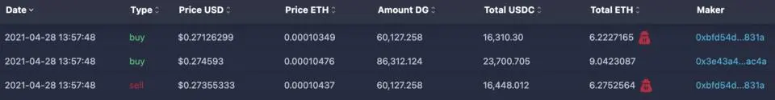

抢先交易攻击（Front-Running）
author：Thomas_Xu
漏洞概述
简单来说，Front-Running 是指在一笔正常交易等待打包的过程中，抢跑机器人通过设置更高 Gas 费用抢先完成攻击交易，以此攫取用户利益的攻击行为。而 Mempool（交易池） 是一组已经广播到网络中并等待被打包进区块的以太坊交易，它是 Front-Running 可以实施的前提，抢跑机器人通过不断扫描 Mempool 中的交易，来分析发现可攻击的目标。
在所有 Front-Running 中，最典型最具危害性的就是针对 AMM(自由做市商) 交易的 Sandwich Attacks （三明治攻击），除此以外还有针对套利、清算交易、闪电贷等利用系统漏洞获利的抢跑攻击，攻击者数量众多，且由自动化脚本控制，永远不知疲倦，因此任何有利可图的交易都会遭受他们的饱和攻击，几乎没有幸免的可能。
- Sandwich Attacks
首先我们来看一个真实的三明治攻击案例：

上图可见，三笔交易在同一个区块被打包，两笔攻击交易（打上了黑客标记的）中间夹着一笔正常交易。其具体流程如下：- 用户首先发起一笔正常交易，用 237000.705USDC 买入 DG，设置 Gas Price 为 40.5Gwei；
- 抢跑机器人检测到这笔有利可图的交易后，随即展开攻击，发起一笔买入交易，设定 GasPrice 为 49.9Gwei，凭借 Gas 竞争机制成功抢跑用户的正常交易；
- 与此同时，机器人发出另一笔卖出交易，设置 GasPrice 同样为 40.5Gwei，因为时间顺序的原因，紧贴着用户正常交易完成。
一次完美的抢跑攻击完成，算上手续费，机器人共赚取 16448.012-16310.3-15.2-10.61 = $111.9，而这种两笔攻击交易夹着一笔正常交易的攻击，就被形象的称为三明治攻击。
原理说明
我们知道，现如今的主流 DEX 如 Uniswap 等，采用的都是 AMM （自动化做市商）机制，其价格遵循恒定乘积公式。例如，在 Uniswap 中建立一个 A 代币与 ETH 的流动池，A 数量为 1000，ETH 数量为 100，则两者数量乘积为 100000，当前 A 价格为 0.1ETH。当 Alice 试图用 10 个 ETH 来池子里购买 A 时，他所得到的 A 的数量 X，可以用下面的公式推导 (注：为简化计算，以下均未考虑手续费)：（1000-X）\*（100+10）= 100000，X = 90.9
这笔交易中，A 的价格为 10/90.9 = 0.11，相比于原来 A 的价格，价格滑点为 :（0.11-0.1）/0.1*100% = 10%一笔交易就让币价产生了 10% 的滑点，可见越是流动性差的池子，遇到大额交易，越是容易产生滑点。而如果，能在用户正常的大额交易前（预计该交易会产生较大滑点），抢先买入 A，再在用户正常交易后，将刚买入的 A 卖出，就可以获得一笔不菲的收益。沿用刚才的例子，假设在 Alice 的交易前，Bob 抢先花 5 个 ETH 购买 A，然后在 Alice 的交易完成后，Bob 再把之前买入的 A 卖出，我们看看会有什么样的结果。
首先是 Bob 的抢跑交易：(1000-X)\*(100+5) = 100000, X = 47.62
即，Bob 用 5ETH 购得 47.62 个 A接下来是 Alice 的正常交易，注意此时流动池中 A 的数量变为 952.38，ETH 的数量变为 105：(952.38-X)\*(105+10) = 100000, X = 82.81
最后 Bob 卖出 47.62 个 A 的交易，此时流动性中 A 的数量为 869.57，ETH 的数量为 115：(869.57+47.62）\*（115-Y）= 100000，Y = 5.97
通过这一次抢跑攻击，Bob 净赚 5.97-5 = 0.97 个 ETH，而 Alice 净亏 90.9-82.81 = 8.09 个 A，Bob 通过使 Alice 蒙受更大的滑点损失来获得自己的收益！
解决方案
作为一般用户，应对 Front-Running 可以有以下几种手段：
- 设置较低的交易滑点，比如 0.1%，这会让抢跑机器人缺少可盈利的空间。 缺点：滑点过低导致大额交易十分容易失败，且失败的交易仍然需要支付高昂手续费。
- 提高 gas 费用，这会增加机器人的攻击成本。缺点：这同样也增加了自己的交易成本。
可以看出，以上解决方案都是无奈之举，且有各种不足，幸运的是，有很多团队认识到了 Front-Running 的危害性，并提出了不少有建设性的解决方案。首先通过对捕猎全过程的分析，我们可以得出结论，要实现 Front-Running，需要几个要素：
- Transaction 公开性：可以在交易池中获取交易的详细信息以太坊交易执行机制：
- 可以通过 gas 竞争的方式抢先完成交易
- AMM 交易曲线机制：恒定乘积机制可以造成较大滑点
反制手段就是分别在这几个要素上做文章。
- 避免Transaction公开性
既然机器人是通过分析交易池中的交易来决定是否发起攻击，那么我们将交易信息直接加密，让机器人看不到或者看不懂不就好了？
社区中就有人提议使用零知识证明技术 zk-SNARKs 来达成上述目标，即运用 zk-SNARKs 将每笔交易的信息都加密隐藏起来，让机器人无从下手。
不过，目前该方案还不够成熟，存在需要消耗更高 Gas 费用和可能被利用来进行阻塞攻击，导致系统化整体 liveness 的缺陷。
更改以太坊交易执行机制
当前的以太坊交易执行机制是通过 Gas 竞争来完成的，即谁出的 Gas 费高，矿工就优先打包谁的交易，那么我们如果绕过这种机制，把交易发给矿工让其直接打包，就杜绝了抢跑机器人在中途攻击的可能性
所以一种类似于 Layer 0 的方案也得到了一些应用，如星火矿池的 Taichi 服务，用户可以直接在 MetaMask 中设置 Taichi 的以太坊节点，这样交易就直接在没有出现在 Mempool 的情况下被打包了，但劣势是被打包的时效有一定的不确定性。
另外，如 ArcherSwap 类似理念的解决方案，构建了交易者和矿工之间的桥梁，交易者可以通过打赏的形式让矿工直接打包自己的交易，这就避免了被 Front-Running 的可能。虽然有那么点交保护费来避免被攻击的感觉，但也实实在在的降低了交易者的成本，而且有着不收取交易失败费用的优势。AMM 算法优化
在 AMM 机制下，大额交易产生过大的价格滑点（可理解为一个临时的错误价格），是 Front-Running 的利润空间，如果有一种 AMM 机制可以减少大额交易对后续交易价格的影响，就可以有效防止 Front-Running 攻击
早在 2018 年，Vitalik 在以太坊技术社区中提供了一个 方案，当发生兑换交易时，交易池价格不会立刻调整成真实价格，而是在若干分钟内，缓慢的趋向真实价格，这就好像交易池凭空多出了很多流动性一样，因此我们将这种技术称之为 Vitrual Balance （虚拟余额）技术。这种新机制，可大大压缩套利者的利润空间，有效防御 Front-Running 攻击，同时还可以增加流动性做市商的收益，可谓一举多得，1inch 的 mooniswap 就是这个方案的一个实现版本.增加流动性
此外，还有种思路，就是尽可能的加大交易池中特定价格区间的流动性，流动性越大，滑点越小，当流动性大到一定程度的时候，抢跑机器人就丧失了盈利空间，Uniswap 的 V3 版本的聚焦流动性特性，就是在这方面做出的努力。

true

...
...
This is copyright.